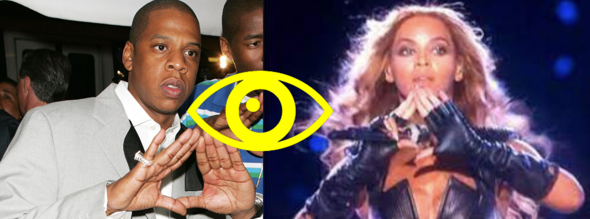

The Illuminati
The Illuminati is a mysterious secret society group with claims to possess special enlightenment, The Illuminati was created in Bavaria, Germany by a professor of civil law called Adam Weishaupt in 1778, Adam targeted wealthy and influential people who had Social influence. Some of the first prominent Illuminati members were .The Illuminati's operations were first widely exposed to the public in the 1797 book Proofs of a Conspiracy Against All the Religions and Governments of Europe Carried on in the Secret Meetings of Freemasons.

On May 1, 1776, one of the most influential groups was founded, by Adam Weishaupt and Illuminati. They were called the Bavarian Illuminati which started in Bavaria, Germany, most people think that the Illuminati is a bad thing but the reason Illuminati was formed was to promote equality and oppose the Catholic Church's authority, they were dreaming of an adequate world. Adam Weishaupt (Founder Of the Illuminati) was a strong believer in equality and was looking for a way to get his agenda across the board to Bavaria than the whole of Germany so he started the Illuminati with the main goal of encouraging independence and equality for everyone, the Illuminati believed women should be educated and treated as equals and the catholic church shouldn’t have the amount of power that they had. The secret society became massively popular in Bavaria they gained a number of members by invading other popular groups, persuading them to join.
The Illuminati's most prominent members were known to be some of the most influential people in Germany at that time, consisting of philosopher Johann Gottfried von Herder (Famous German Philosopher), writers like Johann Wolfgang von Goethe (Famous German Poet), soldiers, and politicians. Despite the group seeking incredibly lofty goals and achieving over 2,500 members in the state of Bavaria, Germany, they didn’t get the total influence they wanted and the Illuminati shut down in 1785. They didn’t shut down with the intention of giving up, they had shut down after murmurings about the group surfaced and some Illuminati writings that contained an anti-government agenda were intercepted. Royal Charles Theodore, (Elector of Bavaria), enacted the secret society veto, this law banned all secret societies including the Illuminati. The government began hunting for members, Adam Weishaupt was banished from Bavaria, Homes got searched, documents were seized, and members were arrested but that wasn’t the ultimate conclusion of the group as there are lots of conspiracy theories surrounding the Illuminatis presense today.

Johann Gottfried von Herder (Left), Johann Wolfgang von Goethe (Right)
In 1975 a dell punlishing hired two authors Robert Shea and Robert Anton Wilson to write a book. The two authors decided they should write a novel and discuss conspiracy theories in the book and named it Illuminatus. They thought it would be a great story to spread misinformation about the Illuminati and other secret societies. The book ended up spreading lots of theories and created some of the mysteries of the time like who shot John F Kennedy. Although the illuminati was technically shut down years ago Musical artists Jay-Z and Beyoncé have teased the illuminati's existence by raising their hands into the Illuminati signature triangle at concerts suggesting that they may have involvement in the group.
